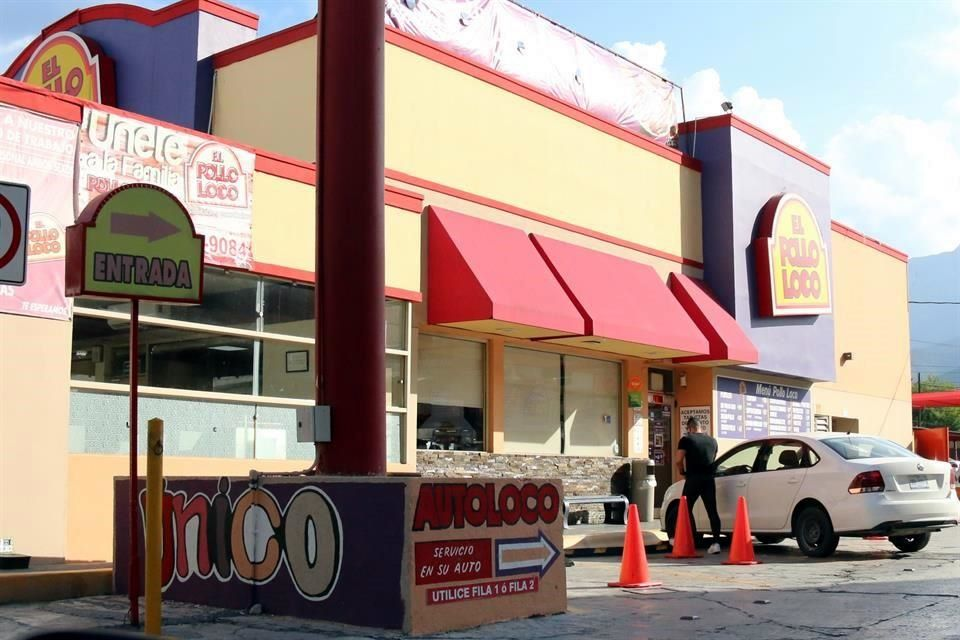
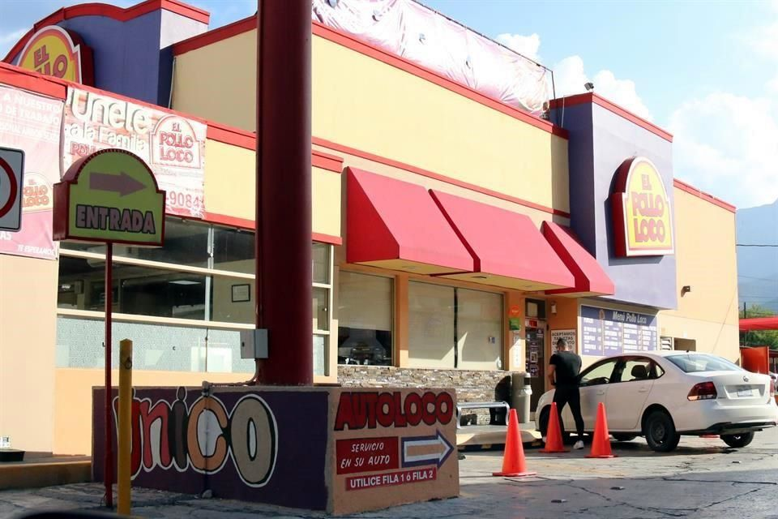
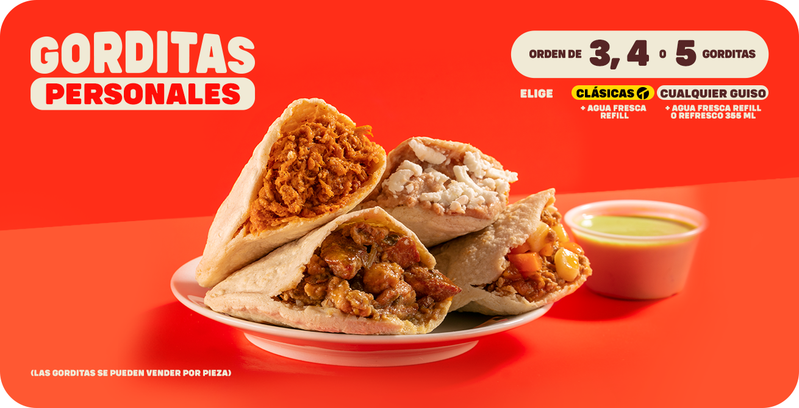
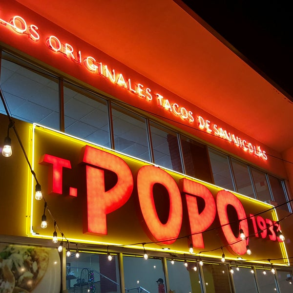
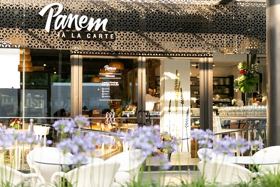

DESCUBRE TU PROXIMA SALIDA
DESCUBRE TU PROXIMA SALIDA

Pollo loco
Se come rico y barato!
El Pollo Loco es una franquicia de restaurantes de pollo asado mexicano de 400 sucursales en Estados Unidos y México fundada en Guasave, Sinaloa, México en 1975.
Kurai Sushi
Gran variedad de comida, pero el precio no tan razonable.
Kurai sushi es un restaurante buffet de sushi y comida oriental. Un lugar muy colorido y espacioso. Sus sucursales en Monterrey se encuentran en Avanta Gardens y Fashion Drive.
DESCUBRE TU PROXIMA SALIDA
DESCUBRE TU PROXIMA SALIDA

Pollo loco
Se come rico y barato!
El Pollo Loco es una franquicia de restaurantes de pollo asado mexicano de 400 sucursales en Estados Unidos y México fundada en Guasave, Sinaloa, México en 1975.
Kurai Sushi
Gran variedad de comida, pero el precio no tan razonable.
Kurai sushi es un restaurante buffet de sushi y comida oriental. Un lugar muy colorido y espacioso. Sus sucursales en Monterrey se encuentran en Avanta Gardens y Fashion Drive.
 Muncher House
Un estandarte de la cocina regiomontana, un manjar para el paladar, pruebalo y disfruta de lo que es, el Norte del pais.
Muncher House
Un estandarte de la cocina regiomontana, un manjar para el paladar, pruebalo y disfruta de lo que es, el Norte del pais.
Tiene el sello Antojitos Monterrey.
Comida para el alma, techo para el corazón.
Muncher House es un restaurante que se especializa en hamburguesas de diferentes tipos e ingredientes, así como bebidas con o sin alcohol. Tiene cuatro sucursales en la zona metropolitana de Monterrey, Nuevo León, México.

Gorditas Doña Tota
Gorditas Doña Tota le hizo a las gorditas lo que Porfirio Diaz a Mexico.
Fundada en Saltillo, México, en 1952, Gorditas Doña Tota ha expandido su presencia a lo largo de México y en algunos lugares de Estados Unidos. La empresa se ha destacado por su compromiso con la calidad de sus productos y la satisfacción de sus clientes, convirtiéndose en una de las franquicias de comida rápida más populares de México.

Tacos Popo
Nada como unos excelentos tacos, ya sea de al pastor o asada, o mañaneros de una gran variedad de guisos para saciar el hambre.
Restaurante Taquería 🌮
Ambiente familiar.
4 Sucursales:
📍 Fray Bartolomé ☎ 8376 8219 -Mañaneros
📍 Fray Bartolomé ☎ 8352 9828 -Tarde
📍Cumbres Elite ☎ 1095 1148
📍 Contry ☎81 3402 4917

Panem Bakery
El pan esta rico y el cafe tambien, pero la comida aparte de cara no esta tan buena.
Panem Bakery es una panadería y cafetería ubicada en la ciudad de Monterrey, Nuevo León, México. Es conocida por su amplia variedad de panes y postres recién horneados, así como por sus opciones de café de alta calidad.